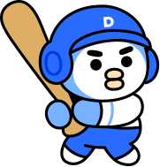

팀이 함께 콘텐츠를 검수해 정확도를 끌어올립니다. 내 검수가 점수가 되고 캐릭터가 성장해요. 계정으로 로그인하면 어느 기기에서나 이어집니다.
로컬 모드입니다 · 로그인 없이 닉네임과 캐릭터만 정하면 바로 시작해요. 내 검수가 점수가 되고 캐릭터가 성장합니다.
- 자동 인입은 운영(팀) 관리자 전용입니다
- 로컬 단독 실행에서는 수동 추출을 사용하세요
- 콘텐츠를 자동으로 추가하는 수집 소스를 설정합니다
- 등록·활성화한 소스로 들어온 콘텐츠가 자동으로 추가되어 초안이 생성됩니다
- 일회성 처리는 수동 추가를 사용하세요
- 크롤러 엔드포인트에서 수량 목표로 당겨와 추출 → 전건을 팀 검수 대기에 적재합니다
- 실시간 스트리밍 부담 없이 배치로 처리합니다
- 활성 소스는 폴링(초) 주기마다 백그라운드로 자동 인입되고, 실행 큐에 진행률이 표시됩니다.
- 즉시 한 번만 받으려면 지금 인입, 멈추려면 중지.
- 콘텐츠 정보(그룹·제목·본문)와 이미지를 함께 넣고 시각 이해 방식을 고른 뒤 실행하면, 본문과 이미지 신호를 합쳐 리드문·인텐트·엔티티·IAB를 추출합니다
- 이미지 여러 장은 하나의 콘텐츠로 통합합니다
- 결과 확인 후 콘텐츠로 등록하면 검수 대상이 됩니다
- 영상을 올리면 프레임+오디오를 한 번에 토큰화해 통합 원고를 만들고 리드문·인텐트·엔티티·IAB를 추출합니다
- 결과 확인 후 콘텐츠로 등록하면 검수 대상이 됩니다
- 자막을 붙여넣으면 영상 모델 호출 없이 자막으로 원고를 만듭니다(비용 0)
- 추가 열 리드문 · 엔티티 · 인텐트 · 콘텐츠 카테고리 · 등급 · 사유(여러 값은 가운뎃점·쉼표·세미콜론·파이프로 구분)
- 인텐트·카테고리는 공통 사전 값만, 등급은 G · R · 빈값만, 사유는 품질 메타 ID
- 사유가 있으면 등급 R 규칙을 어긴 행은 저장하지 않고 사유를 돌려줍니다(최대 200행)
행마다 한 콘텐츠로 일괄 추출합니다 컬럼명이 제목/본문/서비스명과 달라도 자동 추론합니다 (최대 200행)
| 행 | 제목 | 저장하지 않은 이유 |
|---|---|---|
- 추가된 콘텐츠(자동·수동 불문)에 모델을 실행해 검수용 초안을 만듭니다(수동 실행)
- 실행 결과는 버전 로 기록됩니다(버전 = 학습 반영 회차 + 1)
- 미실행만 = 추가만 된 콘텐츠(기본) · 전체 재실행 = 기존 초안을 이력에 남기고 덮어씁니다
- 건당 비용 발생 · 진행은 STEP 3 실행 큐
- 판정 저장 후에도 조치가 남은 콘텐츠입니다
- 종료에는 현재 기준 재검수와 필요한 서비스 반영 근거가 필요합니다
| 콘텐츠 | 상태 | 담당·기한 | 근거·다음 조치 | |
|---|---|---|---|---|
기한 경과 | ||||
| 해당 조건의 조치 건이 없습니다. | ||||
- 대상은 기초 검수를 거쳤지만 정답으로 확정되지 못한 건(의견 갈림 · 등급 없음 · 분류 없음)과, 인텐트 후보가 전 출처 공통 68개로 바뀌어(2026-09-22) 정답의 인텐트를 다시 확정해야 하는 건(인텐트 재확정)입니다
- 인텐트 재확정은 상세에서 이 인텐트로 재확정(초안 의도 그대로) 또는 고쳐서 재확정(의도를 고친 뒤 저장)으로 끝냅니다
- 확정 전까지 그 정답은 인텐트 측정에서 빠집니다
| 콘텐츠 | 초안 | 기초 의견 | 사유 | 결정 현황 | 결정 |
|---|---|---|---|---|---|
| 원문 소실 | 대기 |
| 항목 | |
|---|---|
| 유통 가능 G | |
| 처리 건수 | ▲ |
| 평균 리드문(자) | |
| 인텐트 상위 | · |
| 카테고리 상위 | · |
| 품질 사유 상위 | · |
| 등급 | 콘텐츠 | 서비스 | 현재 모델 | 버전 |
|---|---|---|---|---|
| 필드 | A | B |
|---|---|---|
| 다름 |
- 지금 테스트 대상이 아닌 탐구 요소를 모아둔 공간입니다
- 테스트 대상으로 확정되면 본 메뉴로 승격합니다
- 토픽 스튜디오는 클러스터링 체계(어떤 콘텐츠를 어떻게 묶을지)를 자연어로 정의하고 즉시 실험하는 공간입니다
- 원하는 묶음을 문장으로 설명하면 조건값이 자동으로 채워집니다
- 채워진 조건값은 직접 켜고 끌 수 있습니다
- 토픽을 만들고 활성으로 볼지 정하는 기준은 품질 통과(G) 콘텐츠입니다 · 현재 건이 유통 불가
- 유통 불가 콘텐츠도 조건이 맞으면 편입돼 사안 규모로 보이지만(표의 편입 수) 활성 판정과 대표 콘텐츠에는 들어가지 않습니다
- 어울리지 않는 콘텐츠는 토픽을 열어 개별 제외할 수 있습니다
- 분야
- 스포츠 · 경제 · 범죄 관련
- 의도
- 분석 위주 · 속보만 · 후기 · 심층
- 엔티티
- 손흥민 · 삼성전자사전에 있는 이름만
- 출처
- 카카오TV만 · 브런치는 빼고데이터에 있는 서비스 · 매체만
- 기간
- 최근 2주 · 오늘 올라온 · 이번 달
- 형식
- 영상만 · 쇼츠 빼고 · 글만 · 라이브 제외
- 첨부
- 사진 있는 것만 · 영상 딸린
- 길이
- 긴 글만 · 짧은 글 제외긴 글 = 1,500자 이상
- 표시
- 단독만 · 주요 뉴스 · 기획 기사 · 중복 빼고 · 후속 있는
- 매체 등급
- 우수 매체만 · 블랙 제외
- 열독률
- 많이 읽힌
- 제외
- …는 빼고 · 제외 · 말고같은 축에선 제외가 이깁니다
사전에 없는 값은 만들지 않습니다. 광고 · 성인 · 선정 · 삭제는 늘 빠지고 "광고 포함해도 돼"로 풉니다. 데이터에 없는 필드는 "필드 없음"으로 알려 줍니다.
| 구분 | 토픽 | 구성 | 콘텐츠 | 오늘 | 7일 | 신호 | 관리 | |
|---|---|---|---|---|---|---|---|---|
·
|
조건 재확인 | |||||||
|
조건
필수
제외
변경 기록
개별로 뺀 콘텐츠
최근 샘플 3건
동작
| ||||||||
| 자동 · 엔티티형 일시정지 | ||||||||
| 자동 · 사건형 일시정지 | ||||||||
| 아직 만든 토픽이 없습니다 · 위 토픽 생성하기에서 정의해 저장하세요 | ||||||||
| 자동 생성 토픽 없음 · 데이터가 많을수록 · 자동으로 묶기 기준을 낮추면 더 형성됩니다 | ||||||||
| 토픽 | 콘텐츠 | |
|---|---|---|
- 조치 상세에서 원문 근거와 실제 적용 정책 버전을 확인한 합의 기록입니다
- 각 체계의 정책(사전·카테고리·법령)을 직접 수정할 수 있습니다
- 저장 시 즉시 추출에 반영되고 로컬에 영속됩니다
| 폐기 값 | 원문을 다시 보고 고를 값 |
|---|---|
| Tier1 | Tier2 | |
|---|---|---|
항목 없음
|
| 그룹 | 포함 Tier1 | |
|---|---|---|
| 자사 경로 | IAB 공식 | |
|---|---|---|
- 기획서 재편(2026-09-22)으로 품질 메타와 법령(클린) 메타는 후속 기능 메타로 분리됐습니다
- 1차 발행 범위는 아이템 메타 4종(리드문·엔티티·인텐트·카테고리)입니다
- 프리즘에서는 품질 판정을 계속 돌려 검수·평가에 씁니다
- 시스템 설정 › 품질 판정 단계로 끌 수 있고, 끄면 등급이 비어 "판정 없음"으로 집계됩니다(빈 등급은 유통 가능으로 읽지 않습니다)
- 법령 필터는 기본 꺼짐이며 켜도 아이템 메타 추출을 막지 않습니다
| ID | 메타명 · 정의 | 적용 | |
|---|---|---|---|
| 코드 | 유형 | 근거 | |
|---|---|---|---|
- 아이템 메타(리드문·엔티티·인텐트·카테고리·품질·법령)를 만드는 단계별 원천 지시입니다
- 비우고 저장하면 기본값으로 복원됩니다
- 검수 피드백에서 컴파일된 학습 보정(LEARNED)은 별도 블록으로 자동 병기됩니다
- 새 프롬프트 제작·계열별 최적화는 스튜디오 → 빌더에서
- 아이템 메타(리드문·엔티티·인텐트·카테고리)의 코어 규칙·예시는 계약(읽기 전용)이고, 수정은 모델별 쿡북 래퍼 단위로만 합니다
- 프롬프트는 학습 반영 회차(버전)마다 보정됩니다
- 현재 프롬프트 버전 · 새 프롬프트 제작은 스튜디오 → 프롬프트(빌더)에서
- 추출은 독립 4호출입니다: ① 리드문 · ② 엔티티 · ③ 인텐트(사전: 전 출처 공통 68개) · ④ 콘텐츠 카테고리(사전: Tier1/Tier2 + 구분 기준)
- 네 호출은 제목·본문에서 각각 추출하며, 하나가 비거나 실패해도 나머지는 그대로 실행합니다
- 호출 뒤 기계 검증: 사전 불일치 값 드롭 · 전량 드롭 시 1회 재요청 · 엔티티는 개수 상한 없이 대표성 순(복합 명사는 원형 유지)
- 모델 입력은 제목·본문만입니다(서비스명은 수집·저장에만 유지)
- 발행 키(item_unique_key·service_code·cp_type)는 모델에 보내지 않고 발행·라우팅 정보로 함께 저장합니다
- 계열별 쿡북 관례(GPT 출력 계약 · Gemini 스키마 재명시 · Claude 배경 제공 · Solar CRITICAL+자가 검증)를 이 래퍼가 담당합니다
- 플레이스홀더 {ROLE} {SCHEMA} {RULES} {EXAMPLES} {SELF_CHECK} {LEARNED} 위치에 계약 요소가 삽입됩니다
- 비우고 저장하면 기본 래퍼로 복원됩니다
- 콘텐츠 적재 시 엔티티가 개체 사전에 자동 등재됩니다
- 개체당 고유키 1개, 타입·속성은 등록 시 1회 부여(재판정 없음)
- 타입·속성(성별·국적·직업·소속 등)은 위키데이터로 자동 보강하고, 사람이 직접 수정(확정)할 수 있습니다
- 확정 필드는 재보강이 덮어쓰지 않습니다
- 소속처럼 시간에 따라 바뀌는 속성: 사전 속성은 현재 기준으로 보강되지만, 콘텐츠에 부여하는 개체 소속은 콘텐츠가 다루는 당시 기준입니다
- 예) 기아 타이거즈 시절 활약을 다룬 글이면 선수의 현재 소속과 무관하게 기아 타이거즈
- 속성은 토픽 스튜디오의 엔티티 속성 조건이 됩니다
- 예) 성별=여성 ∧ 직업=스포츠인 → "여성 스포츠인" 토픽
| 개체 | 타입 | 속성 | 출처 | 콘텐츠 | |
|---|---|---|---|---|---|
| 나무위키 | |||||
| 등재된 개체가 없습니다 · 콘텐츠를 적재하거나 "기존 콘텐츠 색인"을 실행하세요 | |||||
| 유형 | 제목 · 내용 | 작성자 | 상태 | 답변 | |
|---|---|---|---|---|---|
|
답변 완료 |
답변 대기
|
||||
| 아직 글이 없습니다 · 불편한 점이나 아이디어를 첫 글로 남겨보세요 | |||||
- 평가용 콘텐츠는 콘텐츠 관리 · STEP 1에서 지정합니다
- 검수 목록에서 제외되어 오염 없이 평가에만 쓰입니다
- 평가는 항상 현재 프롬프트 버전으로 실행됩니다
- 버전 간 추이는 학습 반영을 거듭하며 재평가로 비교하세요
- 한 라운드 = 학습 반영(검수 피드백 → 프롬프트 보정) 후 같은 정답셋으로 재평가
- 점수가 나빠지면 그 라운드 보정은 반영하지 않습니다(자동 원복)
- 종료 조건: 목표 달성 · 개선 정체(2라운드 연속 향상 없음) · 최대 라운드 · 수동 중지
- 라운드마다 실모델 호출 비용이 듭니다
| # | 시각 | 종류 | 모델 | 범위 | 상태 | 일치율 | 작업 |
|---|---|---|---|---|---|---|---|
| 완료 |
프롬프트 기록 없음
|
| 항목 | 기준 | 대상 | 변화 |
|---|---|---|---|
이력에서 상세 보기를 선택하세요.
평가 상세를 불러오는 중…
| 요약 지표 | 추천 합격 최저 비용 |
|---|---|
| 등급 신뢰구간(95%) | |
| 목표 달성 | |
| 호출 | |
| 최종 선정 |
- 표본이 없는 항목은 ·로 표시합니다
- 신뢰구간이 겹치는 결과는 우열 판단을 보류하세요
- 여러 모델을 동시에 실행한 결과입니다
- 호출 자원을 공유하므로 응답 시간이 단독 실행보다 길 수 있습니다
| 영역 | 표본 | 등급 일치율 |
|---|---|---|
- 루브릭 실행 시 LLM 호출 비용이 발생합니다
- 채점에 실패했습니다
- 모델 설정을 확인한 뒤 다시 실행하세요
- 위 건수와 점수는 평가 당시 저장된 결과 기준입니다
- 이후 원본에서 복구한 정답은 별도 표시하며, 당시 점수에는 반영하지 않습니다
- 정답이 없거나 재확정이 필요한 항목은 해당 메타 점수에서 제외됩니다
- 등급 일치는 메타의 정확성을 뜻하지 않습니다
| 콘텐츠 | 정답 · 복구 내역 | |
|---|---|---|
|
|
|
|
개선 루프
문제점을 골라 공통 스테이지 프롬프트(사전·정책 › 메타 프롬프트)에 반영하고 다시 비교합니다.
| 영역 | 문제점 | 쿡북 지시(프롬프트에 얹을 문장) | 반영 |
|---|---|---|---|
| 반영됨 | |||
| 눈에 띄는 문제점이 없습니다 · 표본이 3건 미만인 항목은 진단하지 않습니다 | |||
- 반영 뒤 ‘비교 실행’을 다시 눌러 지표가 오르는지 확인합니다
- 지표가 내려가면 사전·정책 › 메타 프롬프트에서 해당 문장을 지웁니다
학습 회차 추이
| 버전 | 일시 | 표본 | 등급 일치율 | 종합 |
|---|---|---|---|---|
| 콘텐츠 | 서비스 |
|---|---|
- 콘텐츠 검수 · 검수 대상 콘텐츠에서 해당 콘텐츠 상세를 열어 분류를 골라 주세요
- 의견을 모아 지정한 일시(모델 버전 시한)에 한 번에 반영해 결과가 흔들리지 않게 합니다
- 반영 후 목표는 소진되고 새 퀘스트를 생성합니다
- '정확' 합의는 정답셋으로 쌓이고, 바뀐 프롬프트는 정답셋으로 다시 평가합니다
- '즉시 반영'은 목표 일시와 무관하게 지금까지 모인 의견을 바로 반영합니다
최근 학습 반영 결과
지시 원본 관리
| 단계 | 모델 | 지시 | |
|---|---|---|---|
| 검수 교정이 쌓이면 지시 원본이 표시됩니다 | |||
| 모델 | 비용 | 실행 |
|---|---|---|
| 콜 | 비용 | 토큰(입·출) | 캐시 · 평균지연 |
|---|---|---|---|
- 정답은 검수 '정확' 합의가 학습 반영 때 누적 승격됩니다
- 평가와 어긋나 오류 의심 · 교정 필요 표시된 항목은 확인 후 제거하세요(정답 오류는 모델 순위를 뒤집습니다)
- 인텐트 후보가 전 출처 공통 68개로 바뀌어(2026-09-22) 기존 정답의 인텐트는 재확정 필요 표시가 붙고 확정 전까지 인텐트 측정에서 빠집니다
- 폐기된 값이 남은 항목은 재판정(폐기값)으로 먼저 보이며, 행의 인텐트 확정으로 새 후보 기준으로 다시 고르면 측정에 포함됩니다
| 콘텐츠 | 등급 | 카테고리 | 인텐트 | 버전 | 출처 | |
|---|---|---|---|---|---|---|
| 오류 의심 교정 필요 | 확정 |
| 용도 | 기준 | 보유 | 부족 | 근거 |
|---|---|---|---|---|
- 기준치 출처: 클래스당 8(SetFit 2022) · SFT 1k(LIMA 2023) · 운영급 13.5k(Llama Guard 2023) · 선호쌍 33k(InstructGPT 2022 참고 상한) · 평가셋 100(tinyBenchmarks 2024)
| Tier1 | 보유 | 부족 |
|---|---|---|
| 검수자 | 검수 | 합의 일치 | 골드 | EM 오류율 | 합의 가중치 | 골드 추세(7일) |
|---|---|---|---|---|---|---|
| 검수 데이터가 쌓이면 표시됩니다 | ||||||
| 단계 | 모델 | 어떤 점에서 의견이 갈리나 |
|---|---|---|
| 콘텐츠 | 정답 | 모델 | |
|---|---|---|---|
- 선택한 모델이 초기 판정한 초안만 목록에 표시됩니다(누적 · 모델별 정답셋의 재료)
- 검수 합의는 이 모델의 정답셋으로 쌓입니다
- 버전 간 비교는 결과 비교 탭에서 합니다
- 현재 초안만 표시 중입니다
| 등급 | 콘텐츠 | 서비스 | 카테고리 | 사유 | 검수 | 담당 |
|---|---|---|---|---|---|---|
| YELLOW 입력 필요 재검토 필요 분류 부족 | · | · | 🔒 담당자 검수 | · 미배정 |
- 배정하면 이 콘텐츠는 담당자에게만 검수 큐에 노출됩니다
- 최소 검수인원 N명이 검수하면 통과로 집계됩니다
- 아무도 선택하지 않고 저장하면 배정이 해제되어 전체 공개(오픈 큐)로 돌아갑니다
- 팀 기능(팀 생성 · 초대 코드 · 멤버 관리)은 팀 모드(공유 서버)에서 동작합니다
- 지금은 로컬 단독 실행이라 팀 없이 개인 검수로 진행됩니다
- 검수·평가·정답셋 등 나머지 기능은 동일하게 사용할 수 있습니다
- 새 팀을 만들면 초대 코드가 발급됩니다
- 팀원은 가입 시 이 코드로 참가합니다(팀 생성은 관리자만)
- 🎖 검수 마스터(레벨 10) 멤버에게 관리자 권한을 위임해 정답셋·정책 관리를 함께 맡길 수 있습니다
님 임시 비밀번호
- 이 비밀번호는 지금만 표시됩니다
- 멤버에게 전달하고, 로그인 후 본인이 변경하도록 안내하세요
| 메뉴 | 슈퍼관리자 | 관리자 |
|---|---|---|
- 체크 = 해당 역할에게 메뉴 노출(동작 가능) · 해제 = 숨김
- 생성자·운영관리자는 항상 전체 · 시스템 설정은 운영관리자 전용(고정)
- 등록표와 승인 근거는 실제 원천·적용 정책을 확인한 파일만 사용하세요
- API 존재와 서비스 수신 완료는 구분합니다
기록 문서는 '프리즘 자동 기록' 제목 바로 아래 표만 갱신 · 등록표·정책이 바뀌면 재승인 필요
- 삭제는 되돌릴 수 없습니다
- 우리 팀 데이터만 영향합니다
- 평가 피드백을 삭제해도 게임 점수·레벨은 자동 보존됩니다(적립 전환)
- 점수를 비우려면 게임 점수 초기화를 쓰세요
- 로컬 적재 데이터 초기화는 이 기기의 SQLite 에만 영향합니다
- 링크 없이 적재된 과거 콘텐츠에 원문 링크만 채웁니다
- 초안·검수 판정·적재 시각은 바뀌지 않습니다
- 매핑 파일(xlsx/csv/tsv/jsonl)에 URL(링크) 컬럼과 해시 또는 제목 컬럼이 있으면 됩니다
- 해시가 있으면 해시 우선, 제목은 정확히 일치하는 1건에만 적용합니다(동일 제목 다건은 건너뜀)
공유 서버 모드입니다. 추출 키는 관리자가 설정하고, 팀원은 따로 키를 넣지 않아도 바로 사용합니다.
- 통합 라우터 · 한 키로 여러 모델(OpenAI · Anthropic · Google · Solar 등)을 호출합니다
- 키 관리가 단순해 권장
- 직접 호출 · Upstage 키로 Solar 모델을 직접 호출합니다
- 통합 라우터와 함께 등록해도 됩니다
- 키 저장 시 연결을 확인합니다
- 기본 실행 모델은 콘텐츠 관리 · 모델 실행 · 사용 모델에서 선택합니다
팀 가이드 링크
시작하기 카드의 '상세 가이드' 바로가기 주소입니다 · 대상을 고르고 URL 을 넣어 저장하면 팀 전체에 공유됩니다.
- 법령 1차 필터(13종 위반 라우팅·스코어링)를 추출에 포함합니다
- 켜면 다음 추출부터 적용됩니다(추가 호출 · 건당 비용 증가)
- 품질 판정 단계를 끄면 품질 호출을 건너뛰고 등급이 비어 있는 상태(판정 없음)로 남습니다
- 빈 등급은 유통 가능(G)으로 취급하지 않습니다
- 판정한 모델이 설명까지 하면 틀린 판정도 맞는 것처럼 편들기 때문에, 설명은 다른 모델에게 맡깁니다
- 고르면 바로 저장되고 팀 전체에 적용됩니다
- 아직 고르지 않았으면 기본 모델이 보입니다(그 모델로 답합니다)
- 프리즘 서버가 메타베이스 API 를 대신 호출합니다
- DB 접속 정보는 받지 않습니다
- 기본 SQL 은 열 별칭 계약(id · service · title · body · url · published_at · grade · summary · entities · intent · category · model · version)에 맞춥니다
- 조건·페이지는 프리즘이 얹습니다
텍스트·엑셀·이미지·자동 인입으로 검수할 콘텐츠를 넣습니다. 용도(검수용/평가용)를 먼저 고릅니다.
같은 화면 STEP 2에서 초안을 생성합니다. 키가 없어도 모의 모드로 전 과정을 체험할 수 있습니다.
반영 일시를 정해 저장하면 팀 퀘스트가 시작되고, 전 팀원의 홈에 D-day가 나타납니다.
목록의 행을 클릭해 원문과 AI 초안을 비교하고 정확/수정을 판정합니다.
A 정확 S 수정 ←→ 이동수정 판정 후 틀린 요소를 골라 바르게 고칩니다. 교정 하나하나가 팀의 학습 데이터가 됩니다.
판정마다 점수가 오르고 퀘스트·배지·레벨이 자랍니다. 팀 퀘스트 D-day까지 함께 완주해요.
- 이번 주 획득 점수로 매기는 순위입니다
- 상위 승급권은 지위 보상, 하위 강등권은 분발 신호입니다(지난주 대비 이동 표시)

| 콘텐츠 | 서비스 | 모델 | 실패 종류 | 콜 | 일자 | ||
|---|---|---|---|---|---|---|---|
| · |
| 콘텐츠 | 서비스 | 모델 | 버전 | 용도 | ||
|---|---|---|---|---|---|---|
| 원문 소실 | 미실행 |
- 과업·역할·제약·출력 형식을 말로 선언하면, 메타 컴파일러가 계열(Claude·GPT·Gemini·Solar)별 프롬프트를 만듭니다
- 만든 프롬프트는 테스트를 거쳐 적용·라이브러리 저장·배포합니다(채택 전 테스트 필수)
- 운영 엔진(계약·래퍼·미리보기)은 사전 · 정책 → 프롬프트 엔진에서 관리합니다
- 배포 = slug + 프롬프트 스냅샷 버전 pin · pin 을 바꾸면 호출측 코드 수정 없이 서빙 프롬프트가 즉시 교체됩니다(버전 0 = 항상 최신)
- API 키는 발급 순간 1회만 표시됩니다(서버는 해시만 저장)
- 유출 시 회수하고 새로 발급하세요
- 호출 예:
- 빌더 결과·직접 작성한 프롬프트를 패턴으로 저장합니다
- 자주 쓰는 항목은 핀으로 위에 고정
- 항목은 복사해 쓰거나 단계 원천 지시로 적용할 수 있습니다(적용 경로는 사전·정책 · 메타 프롬프트 탭과 동일)
본문 보기
- 아래 시간은 종료한 작업의 시작·중단·재개 기록 기준입니다
- 판정 저장 간격 기반 예상 처리율과 별도 집계입니다
- 작업 시간은 탭이 가려졌거나 초 넘게 입력이 없던 구간을 뺀 시간입니다
- 과거 추정은 측정 시작 전 판정 기록의 연속 판정 간격(1초~10분)으로 낸 값이라 실측과 따로 봅니다
| 검수자 | 처음 판정 | 작업 시간 중간값 | 상위 10% | 머문 시간 중간값 | 교정까지 | 판정 없이 닫음 | 다시 보기 | 과거 추정 |
|---|---|---|---|---|---|---|---|---|
이 기간에 기록이 없습니다 · 검수자가 상세를 열고 판정하면 쌓입니다
| 주차 | 기간 | 검수량 | 교정 | 배정분 완료 | 마감 잔여 | 정체 | 비고 |
|---|---|---|---|---|---|---|---|
| 진행 중 | 추정 활동 원장 없음 |
- 검수량 · 교정은 활동 원장(판정 시점에 하루 단위로 쌓는 기록)이라 나중에 재검수해도 줄지 않습니다
- 배정분 완료 · 마감 잔여는 마감 시점 스냅샷입니다
- 스냅샷 이전 주는 추정으로 표시합니다
- 마감된 주는 이 화면을 열 때 한 번 고정되고, 이후에는 다시 계산하지 않습니다
| 검수자 | 상태 | 진행률 | 잔여 | 정체 | 추가 가능량 | 신호 · 점검 | |
|---|---|---|---|---|---|---|---|
|
최종검수자 |
|
|
- 왼쪽은 신고 일정(관리자 입력 · 본인 확인), 오른쪽은 실측 기록입니다
- 상태가 휴가·교육 중·비활성이면 배정 대상에서 자동 제외됩니다
- 검수 속도는 판정 간 간격으로 측정합니다
- 시간당 건을 넘는 구간은 처리량 산정에서 제외합니다(본문 통독이 불가능한 속도)
- 1명당 여러 주제의 신규 1차 검수 합계 약 100개 기준
- 이월·재검수는 별도 집계
| 콘텐츠 | 담당자 | 대표 주제 | 표본 | 작업 | 원래 주차 | |
|---|---|---|---|---|---|---|
| 주차 | 담당·주제 | 신규 | 이월 | 재검수 | 판정 저장 | 일반 / 집중 |
|---|---|---|---|---|---|---|
이전 주간 계획·변경 기록
| 기준 | 값 | 담당자 · 첫 사람이 주 담당, 나머지는 부 담당 | |
|---|---|---|---|
| 검수자 | 배정량 | 배정 후 잔여 | 주간 처리 가능량 | 보장 하한 | 담당 규칙 | |
|---|---|---|---|---|---|---|
| 여력 초과 |
| 일시 | 실행자 | 방식 | 건수 | 배정 대상 |
|---|---|---|---|---|
| 현재 묶음 |
검수자 일정 확인
- 이번 주에 검수에 낼 수 있는 시간을 확인해 주세요
- 배정량이 이 값에 맞춰집니다
- 주간 가용 시간은 이번 주 전체 합계입니다
- 하루 기준이 아닙니다
- 휴가·교육 중·비활성으로 두면 이번 주 배정에서 빠집니다
검수자 일괄 배정 여러 콘텐츠에 한 번에 지정합니다 · 슈퍼관리자 이상
| 제목 | 서비스 | 배정 | |
|---|---|---|---|
- 메타 유무 조건을 해제해 누락·미분류 자료까지 확인하세요
- 일반/집중 표본과 대상 부족 사유는 주간 배정 계획에 구분해 기록합니다
| 서비스 | 콘텐츠 | 등급 | 인텐트 | 카테고리 | 발행 | 상태 | |
|---|---|---|---|---|---|---|---|
| 인입됨 |
- 발행 기간 기본은 오늘 하루이고 필터에서 기간을 넓힐 수 있습니다
- 조건을 먼저 고르고 조회하면 그 범위만 읽어 부담이 적습니다
- 목록은 50건씩 페이지로 넘깁니다
- 제목을 누르면 검수 상세와 같은 화면으로 본문과 발행 메타를 확인할 수 있습니다(읽기 전용 · 판정은 지정 뒤 검수에서)
- 지정하면 콘텐츠와 발행 메타가 프리즘으로 복사되고, 발행 메타가 그대로 모델 초안이 됩니다(다시 추출하지 않음)
- 같은 콘텐츠는 두 번 인입되지 않습니다
- 이미 인입된 행은 인입됨으로 표시됩니다
- 수집분은 검수 콘텐츠가 아닙니다
- 지정하지 않은 행은 목록에서 삭제하거나 두면 정리 기한 뒤 자동으로 지워집니다
- 앞단 판정기로 시험합니다 · 메타를 다 만들게 하지 않고 하나 고르기 질문 7개 안팎으로 확률 분포를 받습니다
- 요청 ① 본문 전체 → 품질 등급(메타 11종 + 문제 없음) · 요청 ② 앞부분 1,500자 → 인텐트 4문항 + 대분류 · 요청 ③ 고른 대분류의 소분류
- 이 모델은 질문마다 본문을 다시 과금해서 질문 수를 줄이는 게 비용의 핵심입니다 · 엔티티·리드문·근거 문장은 만들 수 없어 채점하지 않습니다
- 평균 정확도보다 처리율·정확도 표를 보세요 · "확신도가 이 값 이상인 건만 자동 처리하면 몇 %를 몇 % 정확도로 처리하나"입니다
- 같은 표본으로 기준을 고르고 재므로 실제보다 좋게 나옵니다 · 운영 적용 전엔 골든셋을 둘로 나눠 다시 확인합니다
기준 확률 = 문제 있음 확률이 이 값 이상이면 R · 정의문을 끄면 선택지를 이름만으로 묻습니다(토큰 절반 이하) · 두 설정 모두 한 건·골든셋 시험에 함께 씁니다
- 등급
- 품질 문제 확률
- 인텐트
-
- 카테고리
- 해당 없음
- 확신도
- 지연 · 비용
처리율 · 정확도
| 확신도 기준 | 처리율 | 건수 | 정확도 |
|---|---|---|---|
| 확신도 구간 | 건수 | 평균 확신 | 실제 정확도 |
|---|---|---|---|
| 지표 | 값 | 표본 |
|---|---|---|
- 입력은 발행된 메타(리드문·엔티티·인텐트·카테고리)뿐입니다 · 제목·본문은 쓰지 않고, 키워드 근거 확인도 메타 안에서 합니다
- 핵심 키워드 최대 3개 · 기본 선정 비중은 구독 40%·클러스터링 40%·검색 의도 20%입니다
- 메타가 뒷받침하는 후보에서 선정합니다 · 조합형(엔티티를 포함한 명사구)과 단일형(엔티티 또는 주제어)은 형태와 관계없이 선정 순서를 유지합니다
- 비중은 프롬프트의 판단 기준이며 실측 점수가 아닙니다 · 비교 기준인 지금 방식은 확신도 상위 3개입니다
- 키워드 후보는 별도 모델 검사에서 메타 근거·대상 간 관계·부정·미확정 상태·중복을 확인합니다 · 검사 실패 후보는 사용하지 않습니다 · 모델 검사도 오판 가능성이 있어 사람의 비교 검토가 필요합니다
- 핵심 문장: 핵심 키워드가 나온 뒤 그 키워드와 메타로 다시 씁니다 · 키워드가 실패하면 메타만으로 쓰고 표시합니다
- 프롬프트는 호출·모델별로 저장합니다 · Solar 모델에는 Upstage 쿡북을 바탕으로 만든 입출력 예시를 자동으로 붙입니다
저장한 사용자 프롬프트를 사용 중입니다. 새 기본 기준을 적용하려면 각 호출에서 ‘기본 프롬프트로 되돌리기’를 누른 뒤 저장하세요.
적용 프롬프트 보기 · 마지막 저장 기준
키워드 없이 메타만으로 생성
- 키워드 · 지금 방식
- 키워드 · 재가공
-
- 모델 · 지연
키워드 근거·제외 사유
| 엔티티 | 정식명 | 유형 | 관련도 | 키워드 후보 |
|---|---|---|---|---|
- 엔티티가 있는 정답을 대분류별로 고르게 뽑습니다
- 카테고리가 없으면 인텐트로 나누며, 실행할 때마다 다시 선정합니다
키워드 없이 메타만으로 생성
- 키워드 · 재가공
-
선정된 키워드 없음
- 키워드 · 지금 방식
키워드 근거·제외 사유
기존 투표 기록은 보존되며, 아래 집계는 결과에 연결된 새 투표만 포함합니다 · 문장 결과는 이 보관 대상에 포함되지 않습니다
보관된 키워드 결과가 없습니다
당시 입력 메타
- 단일 모델 테스트는 모델 1개로 콘텐츠 1~30건을 확인합니다
- 비교 실험은 동일한 콘텐츠에서 모델·프롬프트 버전 2~3개를 비교합니다
- 같은 모델의 다른 프롬프트 버전도 비교할 수 있습니다
- 결과를 A·B·C로 섞어 보여주고, 각 결과를 검수한 뒤 모델·버전을 공개합니다
| 설정 항목 | |
|---|---|
| 모델 | |
| 프롬프트 버전 | |
| 버전 관리 |
- 선택한 모델에 저장된 프롬프트 버전만 표시합니다
- 저장된 버전이 없으면 ‘새 버전 만들기’에서 규칙을 확인하고 저장하세요
- 엔티티가 있는 콘텐츠 정답셋에서 입력한 수만큼 가져옵니다
- 기존 문장 실험의 입력 키워드를 그대로 사용합니다
- 비교할 모든 모델에 같은 키워드와 메타를 전달합니다
- 입력 키워드도 실행 기록과 문장 정답에 함께 보관합니다
| 상태 | 콘텐츠 | 검수 | |
|---|---|---|---|
| 모의 | |||
| 결과가 없습니다 |
평가 항목 · 조합별 지표
| 평가 항목 | |
|---|---|
- 적합·수정·제외 비율은 최종 확정한 판단 기준입니다. 평가 정답 일치는 실행 당시 평가용 정답의 표기 일치 수이며, 전체 품질 점수는 아닙니다.
- 화면이 비어 보이면 이 사이트가 내장 표시를 차단한 것입니다
- 원문 바로가기 ↗로 새 탭에서 확인하세요
없음
없음
실제 호출 프롬프트·검사 규칙
- 개선용 정답과 판단 사유를 대상 모델의 쿡북 지침에 함께 전달합니다. 평가용 정답은 전달하지 않습니다.
- 개선안은 자동 적용되지 않습니다. 내용을 검토하고 새 버전으로 저장한 뒤 같은 콘텐츠에서 비교하세요.
실행 결과를 검수하고 개선용 정답으로 반영하세요.
적용 쿡북
- 채택 근거로 사용할 비교 실험을 선택하세요. 모델·버전을 공개하고 해당 버전의 모든 결과를 최종 확정해야 채택할 수 있습니다.
| 서비스 | 제목 | 등급 | 검수 | |
|---|---|---|---|---|
| · |
| Tier2 | 정의 | 예시 |
|---|---|---|
분기 규칙 · 경합 시 우선순위
| 인텐트 | 정의 | 예시 (초안) |
|---|---|---|
| 사유 | 정의 · 판정 기준 | 적용 |
|---|---|---|
| 등급 | 판정 기준 |
|---|---|
- 화면이 비어 보이면 이 사이트가 내장 표시를 차단한 것입니다
- 원문 바로가기 ↗로 새 탭에서 확인하세요
- 페이지가 떠도 "권한이 없거나 존재하지 않는 글" 같은 안내문이면 원문이 삭제·비공개된 것(원문 소실)입니다
분석 당시 저장 원문·버전
- 원천 아이템
- 입력·정책·발행
- 모델·프롬프트
원문·메타나 다른 담당자의 기록이 바뀌면 저장을 거절합니다 · 실제 적용 버전이 없는 과거 자료는 미확인으로 표시합니다.